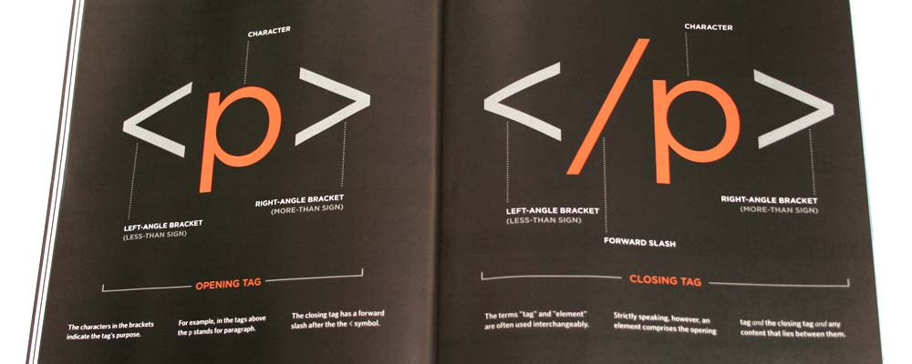
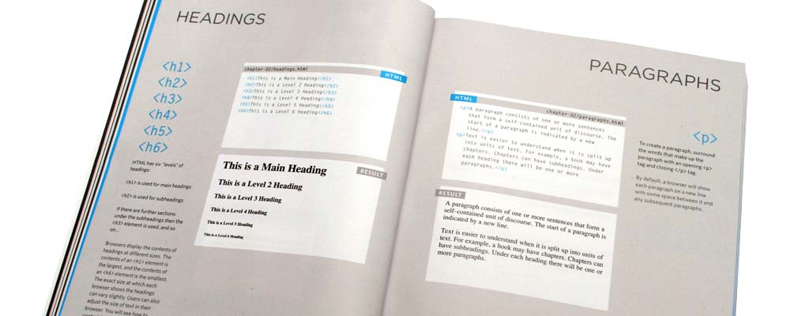
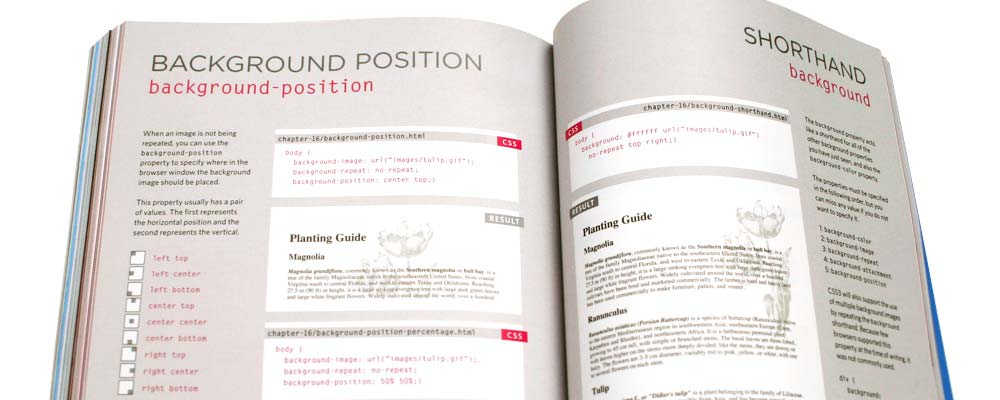
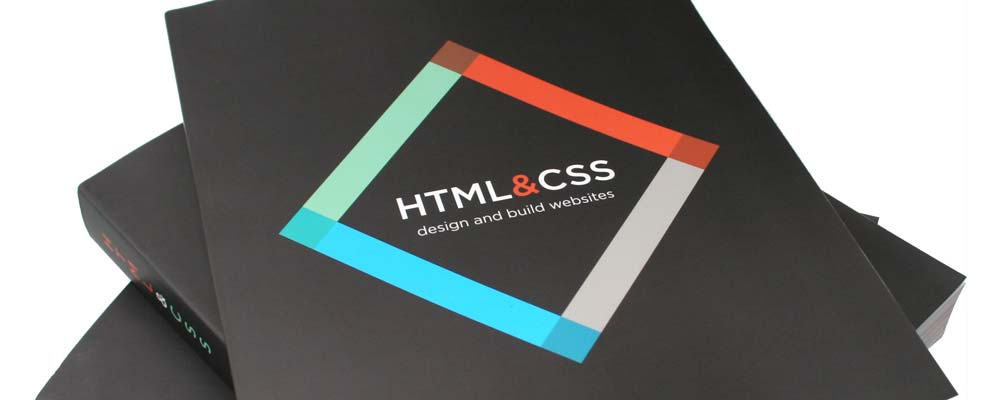
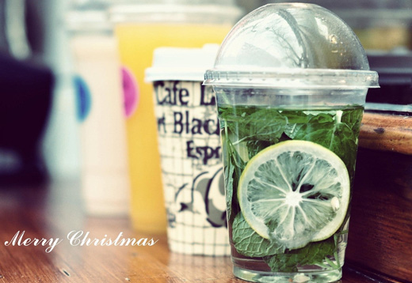
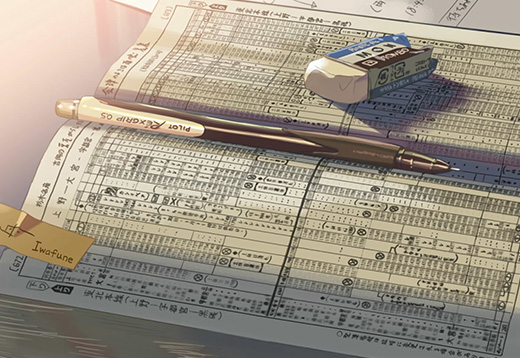
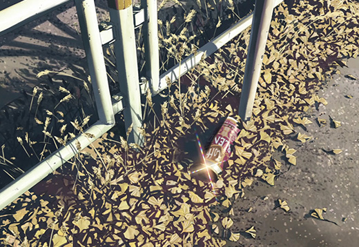

原生Javascript应用
首页
联系我
CSS & HTML作品页
CSS3 & HTML5作品页
手机端静态页
Mac Dock
模拟Mac底部Dock栏图标的感应效果，通过对鼠标和图标中心的测距来完成感应测试。
无缝滚动
无缝滚动是PC大型网站首页经常要用到的一种效果，遇到过好多同行，喜欢用jQuery插件来实现，不但页面加载速度变慢，而且效果不完美，次无缝滚动也是由纯js原生手写，比较完美（因此页所列项目过多，故没加定时器轮播）。
- 
- 
- 
- 
- 0
- 1
- 2
- 3
- 4
照片墙
此效果主要运用定位转换，把页面内块的位置获取并给予每个块自己的绝对定位距离，在进行碰撞检测和随机换位操作。


图片轮换
图片轮换，切换重组是运用数组的基础方法来操作数据。
分块运动
点击时候，穿件N行M列个span，来承载当前background，然后运用定时器对不同位置的span赋予不同运动时间，达到切换的视觉效果。
模拟iphone翻页
模拟iphone的翻页效果，通过判断各个图片的轴心点，来决定当前页面是否翻页。
左右拖动切换
模拟苹果音乐播放器的滑动效果。

- 
- 
- 
模拟视差效果
模拟3D视差效果
手风琴效果
手风琴网页头图


关于Ajax交互和Jsonp跨域交互
由于本人没有租用正规网络服务器，没有数据库可用，所以导致自己做的一些交互的项目和小例子没有办法上传到personal website里，下面仅列出自己封装的ajax和jsonp函数。
Ajax
function json2url(json){
var arr = [];
json.t = Math.random();
for(var name in json){
arr.push(name+'='+json[name]);
}
return arr.join('&');
}
function ajax(json){
json = json || {};
if(!json.url)return;
json.type = json.type || 'get';
json.data = json.data || {};
if(window.XMLHttpRequest){
var oAjax = new XMLHttpRequest();
}else{
var oAjax = new ActiveXObject('Microsoft.XMLHTTP');
}
switch(json.type.toLowerCase()){
case 'get':
oAjax.open('GET',json.url+'?'+json2url(json.data),true);
oAjax.send();
break;
case 'post';
oAjax.open('POST',json.url,true);
oAjax.setRequestHeader('Content-type','application/x-www-form-urlencoded');
oAjax.send(json.data);
break;
}
oAjax.onreadystatechange = function(){
if(oAjax.readyState==4){
if(oAjax.status>=200&&oAjax.status<300||oAjax.status==304){
json.fnSucc&json.fnSucc(oAjax.responseText);
}else{
json.fnFail&&json.fnFail(oAjax.status);
}
}
};
}
JSONP
function jsonp(json){
json = json || {};
if(!json.url)return;
json.data = json.data || {};
json.cbName = json.cbName || 'cb';
json.data[json.cbName] = 'show'+Math.random();
json.data[json.cbName] = json.data[json.cbName].replace(/\./g,'');
var arr = [];
for(var name in json.data){
arr.push(name+'='+encodeURIComponent(json.data[name]));
}
var str = arr.join('&');
var oS = document.createElement('script');
var oH = document.getElementsByTagName('head')[0];
oS.src = json.url+'?'+str;
oH.appendChild(oS);
window[json.data[json.cbName]] = function(result){
json.success&&json.success(result);
oJ.removeChild(oS);
window[json.data[json.cbName]] = null;
};
}